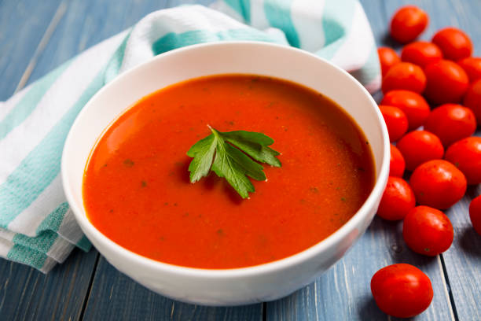

Home
Tomatoe and Basil Recipe

Description
A true comfort classic, this creamy tomato and basil soup is both simple to make and deeply satisfying. It's the perfect recipe for a cozy evening, a light lunch, or a starter to your favorite meal. Made with ripe tomatoes and fresh basil, this soup offers a vibrant, naturally sweet flavor that's both fresh and rich. A touch of cream gives it a luxurious, velvety texture that you'll want to savor in every spoonful. Serve it hot with a side of crusty bread or a grilled cheese sandwich for the ultimate comforting experience.
Ingredients
- 2 tablespoons olive oil
- 1 large yellow onion, chopped
- 2-3 cloves garlic, minced
- 2 (28-ounce) cans of crushed or diced tomatoes
- 4 cups chicken or vegetable broth
- 1 tablespoon white sugar (optional, to balance acidity)
- 1 cup heavy cream or half-and-half
- 1/2 cup fresh basil leaves, chopped
- Salt and black pepper to taste
- Optional: Grated Parmesan cheese for garnish
Steps
- Sauté the aromatics: Heat the olive oil in a large pot or Dutch oven over medium heat. Add the chopped onion and cook for 5-7 minutes, stirring occasionally, until it's soft and translucent. Add the minced garlic and cook for another minute until fragrant.
- Add tomatoes and broth: Stir in the canned tomatoes, vegetable or chicken broth, and the optional sugar. Bring the mixture to a simmer.
- Simmer: Reduce the heat to low, cover the pot, and let the soup simmer for at least 15-20 minutes. This allows the flavors to meld together.
- Blend the soup: Use an immersion blender to carefully blend the soup directly in the pot until it's smooth and creamy. If you don't have an immersion blender, carefully transfer the soup in batches to a standard blender and blend until smooth. Be very careful with the hot liquid.
- Add cream and basil: Return the pot to the stove over low heat. Stir in the heavy cream and the chopped fresh basil. Cook for another 2-3 minutes, stirring continuously, until the soup is heated through. Do not let it boil after adding the cream.
- Season and serve: Season the soup with salt and black pepper to taste. Ladle the soup into bowls and garnish with a few extra basil leaves or a sprinkle of Parmesan cheese, if desired. Serve immediately.